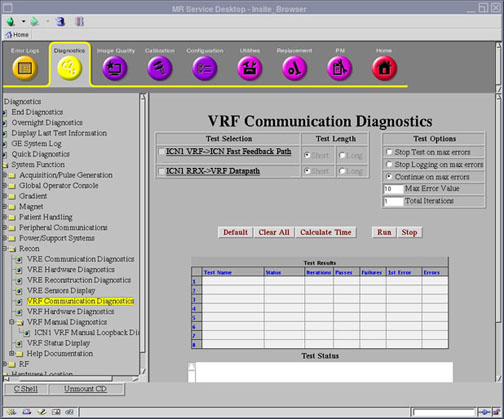
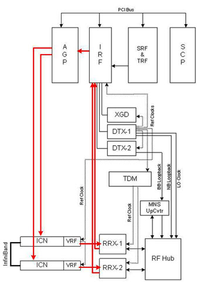

Operating Documentation
Direction 5670000, Rev# 1
Optima MR450w 1.5T Service Methods
Module Version 3.0, Version Date 8/19/08
Operating Documentation |
Diagnostics >> System Function >> Recon >> VRF Communication Diagnostics
Diagnostics >> Hardware Location >> PGR Cabinet >> VRF Communication Diagnostics
Illustration 1: VRF Communication Diagnostics

The purpose of the ICN VRF→ICN Fast Feedback Path is to test the feedback path between VRF and AGP.
Fast feedback path between the VRF and AGP
No special requirements
Illustration 2: ICN Fast Feedback Data Path

| NOTE: | If this is a 32-channel system, use the ICN Identification tool from the Common Service Desktop (Utilities >> Toolbox >> VRE >> ICN Identification) to help distinguish ICN1 from ICN2. |
Select ICN VRF→ICN Fast Feedback Path from the VRF Communication Diagnostics screen.
| NOTE: | If there is more than one ICN, select ICN1 and ICN2 for this diagnostic. |
Click [Run].
Review the Test Results table to see the result of the diagnostic.
This diagnostic has either a passed or failed status. If the diagnostic has failed, please review the error log and corresponding extended error messages for subsequent actions. Additional responses to the diagnostic's failed result are outlined in Table 1.
Table 1: Diagnostic Results
| Result | Description | GE Field Action |
| Passed | The data path passed the diagnostic. | No further action required. |
| Failed | The data path failed the diagnostic. |
|